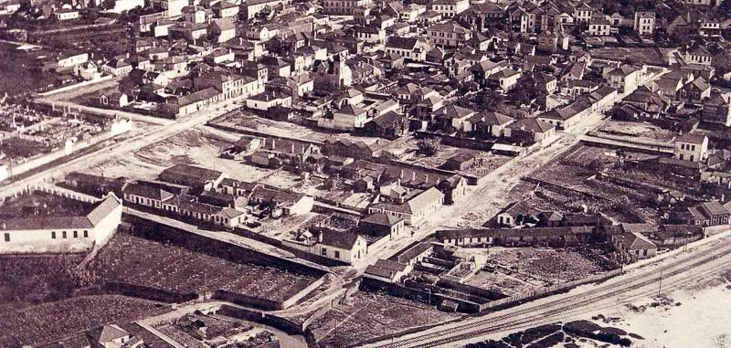
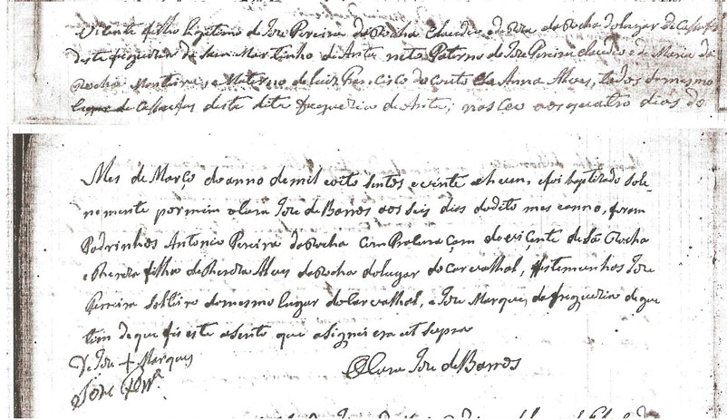
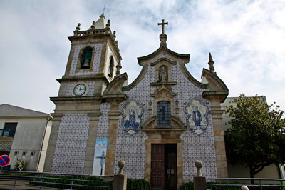
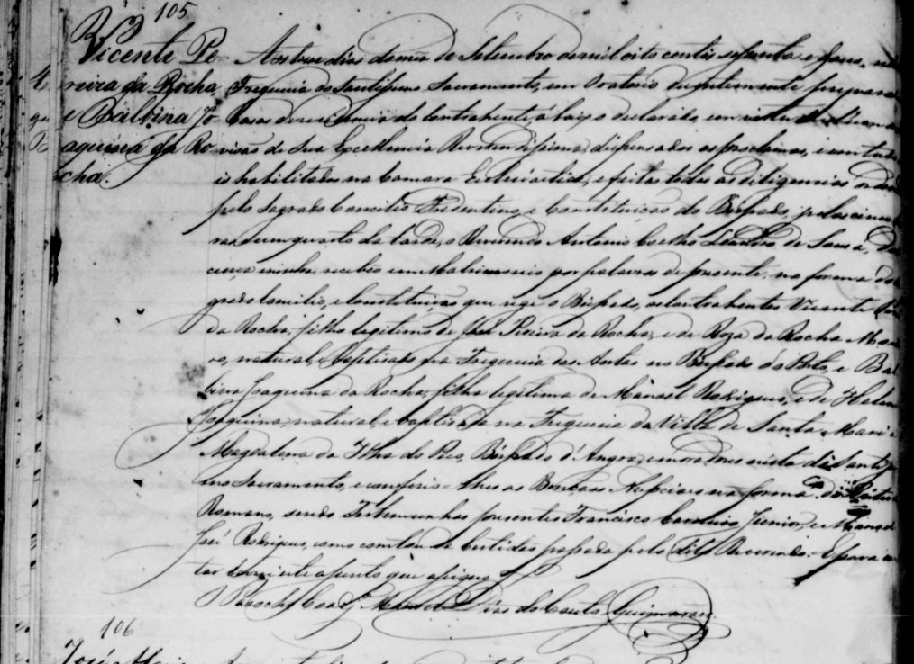
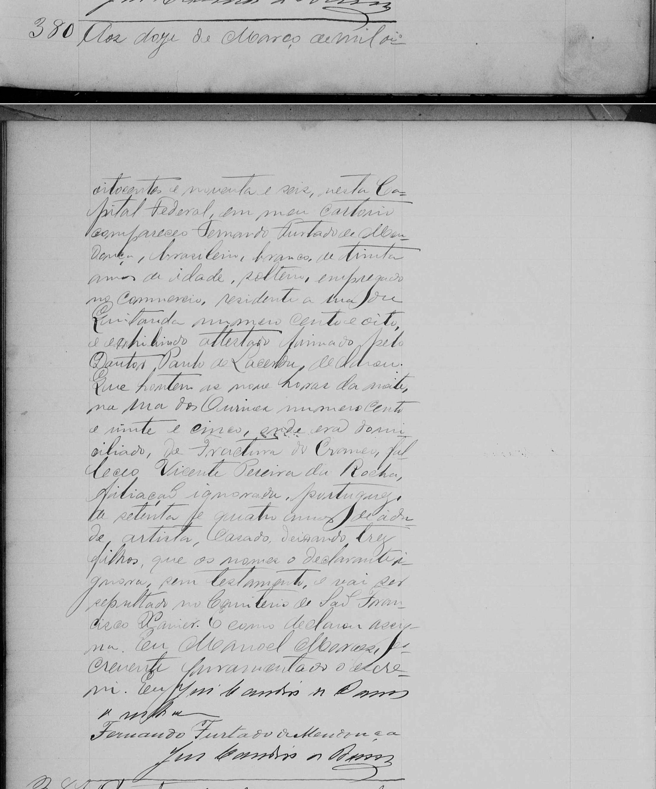

Vicente Pereira da Rocha
1821
Freguesia de Anta – Conselho de Espinho – Distrito de Aveiro
O Conselho de Espinho pertence ao Distrito de Aveiro e à Área Metropolitana do Porto. A fixação de sua população remonta ao ano de 1776, porém o conselho foi criado em 1899 pelo seu desmembramento de Santa Maria da Feira.
Está dividido em 4 freguesias: Anta, Guetim, Paramos e Silvalde.

Espinho
Fonte: http://www.skyscrapercity.com/showthread.php?t=431694
Freguesia de Anta
Os dólmens monumentos megalíticos tumulares colectivos também são conhecidos por antas, orcas, arcas, e, menos vulgarmente, por palas.
Seu nome representa um monumento megalítico de significado místico e religioso que terá existido no seu território.
Seu padroeiro foi São Martinho.
Fonte: http://www.verportugal.net/Aveiro/Espinho/Historia/.
Fonte: Wikipedia
E foi nessa Freguesia que em 04/03/1821 (Fig. 0082.tif /0083.tif) nasceu Vicente Pereira da Rocha, filho de José Pereira da Rocha Claudio e Rosa da Rocha Monteiro e foi batizado em 06/03 do mesmo ano. Foram seus padrinhos Antonio Pereira da Rocha, com procuração de Vicente de Sá Rocha e Theresa filha de Theresa Alves da Rocha.

Arquivo distrital de Aveiro
Registro de Batismo de Vicente Pereira da Rocha (Quadros 82 e 83)
Vicente filho de Jose Pereira da Rocha Claudio e de Rosa da Rocha do Lugar de Cassufas desta freguesia de San Martinho de Anta neto paterno de José Pereira Claudio e de Maria da Rocha Monteiro, e Materno de Luis Francisco do Couto e de Anna Alves todos deste mesmo lugar de Cassufas desta dita freguesia de Anta; nasceo aos quatro dias do Mes de Março do anno de mil oito sentos e vinte e hum, e foi baptizado solenemente por mim o Cura Jose de Barros aos seis dias do dito mes e anno, foram padrinhos Antonio Pereira da Rocha com procuraçam de Vicente de Sá Rocha e Theresa filha de Theresa Alves da Rocha do lugar do Carvalhal, testemunhos Jose Ferreira solteiro do mesmo lugar do Carvalhal e Jose Marques da freguesia de Guetim de que fis esse assento que asignei era ut supra O Cura Jose de Barros
Paroquia de São Martinho de Anta

Fonte: www.panoramio.com
Os pais e irmãos
José Pereira da Rocha Claudio |
| Nascimento: 11/09/1789 (Fig. 0046.tif) Anta – Aveiro |
| Batismo: |
| Padrinhos: |
| Filiação: José Pereira da Rocha e Maria Rocha Monteiro |
| Casamento: 15/04/1817 |
| Falecimento: |
| Profissão: |
| Imigração: 10/01/1828 vindo do Porto, Portugal |
Casamento com
| Rosa da Rocha Monteiro |
| Nascimento: 04/10/1790 (Fig. 0055.tif) Anta – Aveiro |
| Batismo: |
| Padrinhos: |
| Filiação: Luis Francisco do Couto e Anna Francisca Alves (Alvares) |
| Casamento: |
| Falecimento: 13/04/1863 Rio de Janeiro (Correio Mercantil Abril 1863) |
| Profissão: |
| Obs.: |
Filhos
Antonio Pereira da Rocha |
| Nascimento: 26/03/1818 Anta – Aveiro |
| Batismo: |
| Padrinhos: |
| Filiação: |
| Casamento: |
| Falecimento: |
| Profissão: |
| Obs.: |
Vicente Pereira da Rocha |
| Nascimento: 04/03/1821 (Fig. 0082.tif / 0083.tif) Anta – Aveiro |
| Batismo: |
| Padrinhos: Antonio Pereira da Rocha com procuração de Vicente de Sá Rocha e Theresa, filha de Theresa Alves da Rocha |
| Filiação: |
| Casamento: 03/09/1862 com Balbina Joaquina (10/12/1825-08/01/1914), filha de Manoel Rodrigues e Elena Joaquina |
| Falecimento: 12/03/1896 Rio de Janeiro, RJ |
| Profissão: Ourives |
| Obs.: |
Rosa |
| Nascimento: 09/10/1822 Anta – Aveiro |
| Batismo: |
| Padrinhos: |
| Filiação: |
| Casamento: |
| Falecimento: |
| Profissão: |
| Obs.: |
Gertrudes Martins da Rocha |
| Nascimento: 02/09/1824 Anta – Aveiro |
| Batismo: |
| Padrinhos: |
| Filiação: |
| Casamento: 10/05/1838 com José Martins Ferreira (*Freguesia de São Corone? Bispado do Porto-?), filho de Manoel Ferreira e Marcelina Martins da Silva |
| Falecimento: |
| Profissão: |
Filhos com José Martins Ferreira:
|
José Pereira da Rocha |
| Nascimento: 09/07/1826 Anta – Aveiro |
| Batismo: |
| Padrinhos: |
| Filiação: |
| Casamento: |
| Falecimento: |
| Profissão: |
| Obs.: |
Fonte: Arquivo Distrital de Aveiro / E-Tombo
A vinda para o Brasil
No trabalho Os Portugueses do Norte de Portugal com Destino ao Brasil (1805-1832) (Fernando de Sousa / Teresa Cirne), encontramos nas páginas 67 e 250 a vinda de Vicente com seus pais e 4 irmãos (Antonio, Rosa, Gertrudes e Jose) em 1828.
Rosa da Rocha Monteiro
No Correio Mercantil de 13 de Abril de 1863, aparece um anúncio do falecimento de Rosa da Rocha Monteiro e seu obituário, onde lemos que:
Vicente Pereira da Rocha, Antonio Pereira da Rocha (ausente), José Pereira da Rocha, D. Deolinda Martins da Rocha Torres e seu marido (ausentes) Lino Martins da Rocha (ausente), D. Emilia Martins da Rocha e D. Balbina Joaquina da Rocha agradecem a todas as pessoas que se dignarão acompanhar a última morada os restos mortaes de sua muito prezada mãi, avó e sogra Sra. Rosa da Rocha Monteiro e de novo convidão para assistirem à missa de sétimo dia... (Publicado no Correio Mercantil disponível na Biblioteca Nacional digital no endereço: http://memoria.bn.br/DocReader/DocReader.aspx?bib=217280&PagFis=21785
No mesmo Jornal aparece somente um aviso que Rosa da Rocha Monteiro era portuguesa e tinha 70 anos. Não encontramos a certidão de óbito de Rosa da Rocha Monteiro e também não encontramos nenhuma referência ao óbito de José Pereira da Rocha Claudio.
Com esse obituário foi possível começar a montar a história dos antepassados...
O Casamento
Em 03/09/1862 na Igreja do Santíssimo Sacramento, Vicente e Balbina se casaram tendo como testemunhas Francisco Carneiro Júnior (marido da Emília Martins da Rocha filha de sua irmã Gertrudes) e Manoel José Rodrigues.

Registros paroquias da Igreja do Santíssimo Sacramento do Rio de Janeiro
Registro de casamento de Vicente Pereira da Silva e Balbina Joaquina da Rocha
Aos treze dias do mês de Setembro de mil oito centos e dous nesta Freguesia do Santíssimo Sacramento em oratório (?) do contrahente abaixo declarado com vista d´uma provisão de sua Excelencia Reverendissima dispensadas as proclamas ... e habilitada na Camara Eclesiástica e feitas todas as diligencias ... pelo Sagrado Concílio Tridentino e Constituição do Bispado pelas cinco horas e um quarto da tarde o Reverendo Leandro Coelho de Sousa de licença minha recebeo em matrimonio por palavra do presente na forma do Sagrado Concilio e Constituição que rege o Bispado os contrahentes Vicente Pereira da Rocha, filho legitimo de Jose Pereira da Rocha e de Roza Rocha Monteiro, natural e baptizado na Freguesia das Antas no Bispado do Porto e Balbina Joaquina da Rocha, filha legitima de Manoel Rodrigues, e de Helena Joaquina natural e Baptizada na Freguesia da Villa de Santa Maria Magdalena, Ilha do Pico Bispado d´Angra e moradores nesta do Santissimo Sacramento e conferi-lhes as Bençãos Nupciaes na forma do Ritual Romano sendo testemunhas presentes Francisco Carneiro Junior e Manoel Jose Rodrigues como consta de certidão passada pelo dito Reverendo ... assento que assigno.
Os Filhos
Vicente e Balbina tiveram 6 filhos.
Nas certidões de Leopoldina e Alfredo, a Balbina aparece como Balbina Joaquina de Mesquita, com uma averbação dizendo que passou a se chamar Balbina Joaquina da Rocha, após o casamento.
O filho Arthur aparece como filho natural e o nome da mae como Balbina Joaquina da Rocha.
Todos nasceram no Rio de Janeiro e foram batizados na Igreja do Santíssimo Sacramento:
Leopoldina Pereira da Rocha |
| Nascimento: 08/05/1854 Rio de Janeiro |
| Batismo: 20/04/1855 Igreja do Santíssimo Sacramento |
| Padrinhos: Vicente de Sá Rocha e Deolinda Martins da Rocha |
| Casamento: 03/04/1875 Francisco Pereira da Silva (*Praia da Vitoria - Ilha Terceira 29/05/1843-+Rio de Janeiro 30/10/1900), filho de Francisco Pereira da Silva e Marianna Josepha |
| Falecimento: Rio de Janeiro 22/09/1938 |
| Obs.: O nome de Balbina aparece como Balbina Joaquina de Mesquita |
| AVERBAÇÃO: Encontra-se a margem da esquerda certidão a seguinte averbação: Em virtude do despacho (?) Monsenhor (?) do Bispado. Declaro q Leopoldina é filha legitima (?) por subseqte Matrimonio de Vicente Pera da Rocha e Balbina Joaqna da Rocha o fiz em vista .... |
Alfredo Pereira da Rocha |
| Nascimento: 01/05/1856 Rio de Janeiro, RJ |
| Batismo: 24/11/1856 – Igreja do Santíssimo Sacramento |
| Padrinhos: Francisco Antonio de Mattos e sua mulher |
| Casamento: 26/02/1884 com Maria Alexandrina de Oliveira (*?-+20/06/1929), filha de Joaquim Domingos Pereira de Oliveira e Maria da Conceição |
| Falecimento: 20/03/1911 Rio de Janeiro, RJ |
| Profissão: Segundo escriturário da Estrada de Ferro Central do Brasil |
| Curiosidade: Em 28/09/1876 Vicente Pereira da Rocha anuncia a transmissão de sua Empresa de Ourisevaria situada na Rua dos Ourives, 125 a seu filho Alfredo Pereira da Rocha (Gazeta de Notícias 28/09/1876) http://memoria.bn.br/DocReader/docreader.aspx?bib=103730_01&PagFis=1703 |
| Obs.: O nome de Balbina aparece como Balbina Joaquina de Mesquita |
| AVERBAÇÃO: Encontra-se à margem esquerda da certidão a seguinte averbação: Em virtude do despacho (?) Monsenhor (?) do Bispado. Alfredo é filho legitimo (?)de Vicente Pera da Rocha e Balbina Joaqna da Rocha o fiz em vista .... |
Arthur Pereira da Rocha |
| Nascimento: 04/02/1859 Rio de Janeiro, RJ |
| Batismo: 09/08/1960 – Santíssimo Sacramento |
| Padrinhos: Antonio José da Silva Moreira e Protetora Nossa Senhora da Conceição |
| Falecimento: 05/02/1861 Rio de Janeiro, RJ |
| Obs. Filho Natural de Vicente Pereira da Silva e Balbina Pereira da Rocha |
Paulina Pereira da Rocha |
| Nascimento: 1861 (Índice) Rio de Janeiro, RJ |
| Batismo: |
| Padrinhos: |
| Casamento: Francisco Alves Peixoto |
| Falecimento: |
| Profissão: |
| Obs.: Infelizmente não há a pagina do livro relativo ao nascimento, pois está danificado – consta somente no índice |
| Curiosidade: No testamento de sua prima Emilia Martins da Rocha Carneiro consta que Paulina teve uma filha chamada Alcina e que Emilia era sua Madrinha. http://gisaweb.cm-porto.pt/units-of-description/documents/17180/?q=emilia+carneiro |
Carlos Pereira da Rocha |
| Nascimento: 25/06/1863 Rio de Janeiro, RJ |
| Batismo: 21/08/1864 Igreja do Santissimo Sacramento |
| Padrinhos: Francisco Carneiro Junior e Emilia Martins da Rocha Carneiro |
| Casamento: |
| Falecimento: 07/1881 (Gazeta de Noticias 05 08 1881) |
Vicente Pereira da Rocha |
| Nascimento: 30/09/1864 Rio de Janeiro, RJ |
| Batismo: 24/06/1865 Igreja do Santíssimo Sacramento |
| Padrinhos: Antonio José Ferreira e Protetora Nossa Senhora |
| Casamento: |
| Falecimento: 01/12/1893 Igreja do Santíssimo Sacramento |
| Profissão: |
| Obs.: |
O Falecimento
No Jornal do Brasil de 13/03/1896, disponível na Hemeroteca Digital da Biblioteca Nacional (http://memoria.bn.br/DocReader/DocReader.aspx?bib=030015_01&PagFis=5683), lemos que Vicente se suicidou em 11/03/1986 devido a uma doença que ele acreditava ser incurável na Rua dos Ourives, 125, onde ele morava e tinha estabelecimento de Ourives.

Registros Civis do Cartório da Primeira Circunscrição do Rio de Janeiro
Certidão de Óbito de Vicente Pereira da Rocha (frente)
Certidão de Óbito de Vicente Pereira da Rocha (verso)
Aos doze de Março de mil oitocentos e noventa e seis, nesta Capital Federal em meu Cartório, compareceo Fernando Furtado de Mendonça, brasileiro, branco de trinta anos de idade, solteiro, empregado no comercio residente a Rua da Quitanda numero cento e oito e exhibindo attestado firmado pelo Doutor Paulo de Lacerda declarou que hontem as nove horas da noite na rua dos Ourives numero cento e vinte e cinco, onde era domiciliado, de fractura do craneo faleceo Vicente Pereira da Rocha, filiação ignorada, portuguez de setenta e quatro anos de idade artista, casado deixando trez filhos que os nomes o declarante ignora, sem testamento e vai ser sepultado no Cemitério São Francisco Xavier. E como declarou assigna. Eu Manoel Moraes Escrevente Juramentado o escrevi. Eu (?) ... Assinaturas
VICENTE PEREIRA DA ROCHA
FRANCISCO PEREIRA DA SILVA (FILHO)